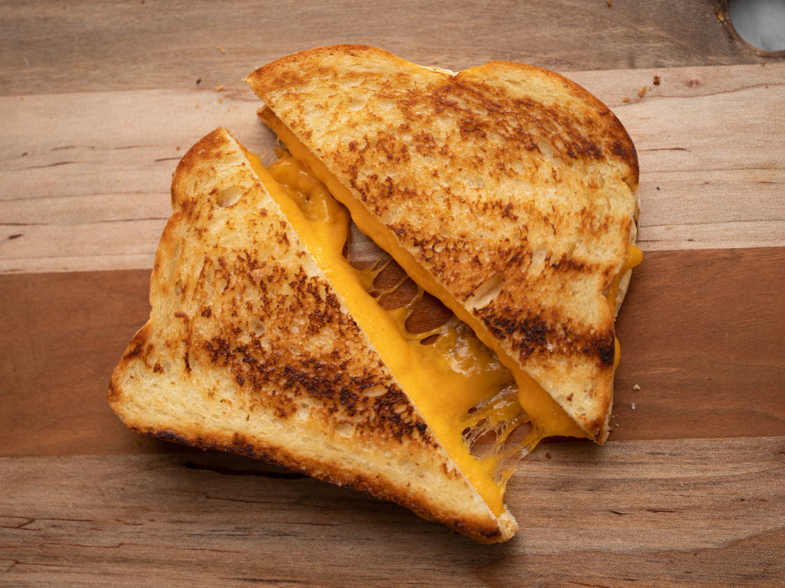

Grilled Cheese

Description
How to make the best lunchtime snack
Ingredients
- 5 tablespoons of butter, softened and divided
- 4 slices of sourdough bread
- 2 cups of shredded cheddar
Steps
- Spread 1 tablespoon butter on each slice of bread
- In a skillet over medium heat, melt 1 tablespoon butter. Cook until bread is golden and cheese is starting to melt
- Repeat for the second sandwich